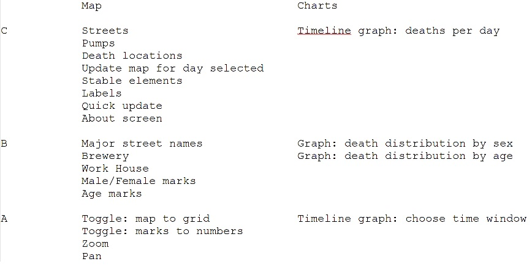
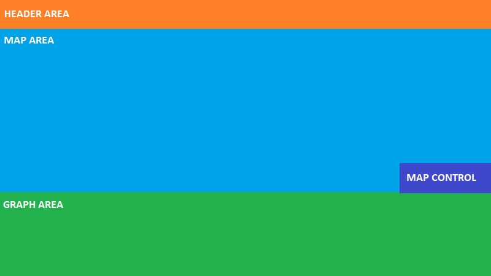
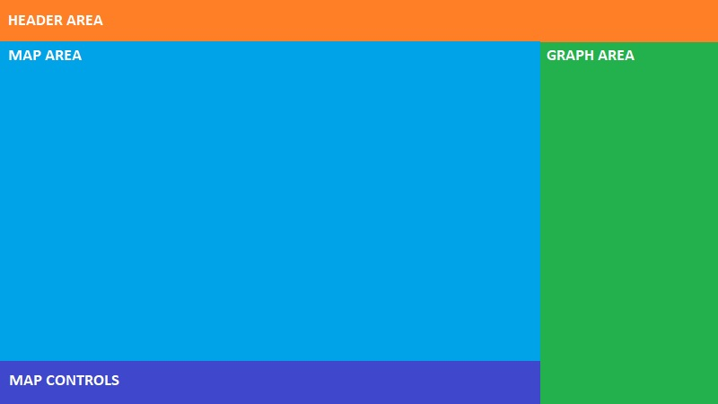
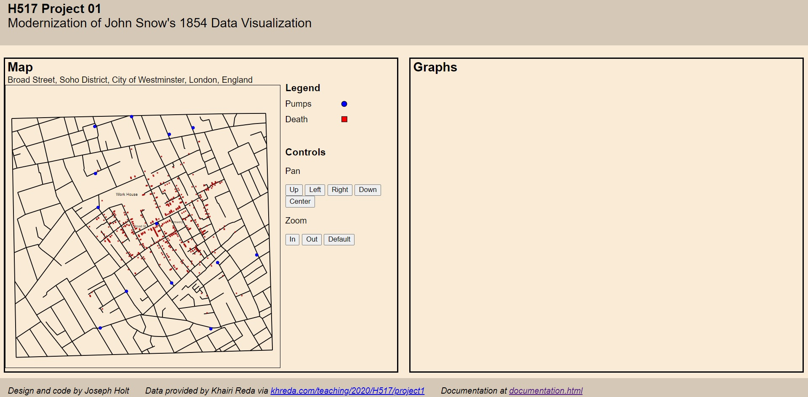

I began by breaking down the features required for each grade threshold in this project.
Originally, they were on one list, but I realized part of the way through that it would be better to divide them by map and graph requirements.
Now with a better idea of what features the entire application would have, I designed my first draft of the project.
I used Microsoft Paint (quick and easy to iterate) to determine what divisions would be on the web page.
I decided against this first draft, as because the map would be square, I wanted to minimize wasted space on that view.
With this in mind, I created my second draft, aiming to limit empty white space on the map view.
The final design takes the design map and primarily increases the width of the graph area.
Another change is that the map controls and legend were moved to the right of the map, in the map area.
A footer area was added to the bottom to support the about links.
